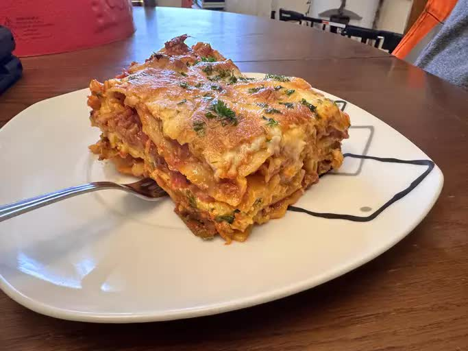

Lasagna

Description
Ein Lasagne Rezept, dass sich an die beste Lasagne anlehnt, die ich jemals gegessen habe.
Leider habe ich das original Rezept nicht.
Bisher ungekocht und nur ein theoretisches Rezept.
Ingredients
Rote Soße:
- 400 g gemischtes Hackfleisch
- 2 Karotten
- 2 Zwiebeln
- 1 Knoblauchzehe
- 1 Dose gehackte Tomaten
- 1 EL Tomatenmark
- 1 TL Oregano
- 1 TL Thymian
- 1 Gefühl Salz, Pfeffer
Weiße Soße:
- 400 g Pilze
- 1 Zwiebeln
- 0,5 l Milch
- 1 EL Butter (was ne dumme Einheit für Butter :D)
- 1 EL Milch
- 1 Gefühl Salz, Pfeffer
Sonstiges:
- 500 g Lasagneplatten (keine Ahnung wie viele man wirklich braucht)
- 75 g Parmesan
- 1 Mozzarella
Steps
- Ofen auf 180°C Umluft vorheizen.
- Rote Soße:
- Hackfleisch scharf anbraten.
- Zwiebeln, Knoblauch und Möhren hinzugeben und mit anbraten.
- Zuerst Gewürze, dann Dose Tomaten und Tomatenmark hinzugeben und 30 min. bei leichter Hitze schmoren lassen.
- Weiße Soße:
- Zwiebeln und Pilze anbraten.
- Butter darin anschmelzen und Mehl hinzugeben.
- Milch unter ständigem Rühren hinzugeben und 10 min. köcheln lassen.
? Eventuell sollte man diese Bechamelsoße getrennt von den Pilzen und Zwiebeln machen und erst am Ende zusammenwerfen.
- Abwechselnd rote Soße, Teigplatten, weiße Soße, Teigplatten schichten.
Zum Schluss weiße Soße und Mozzarella und Parmesan schichten.
- Bei 180°C für 30 min. überbacken.